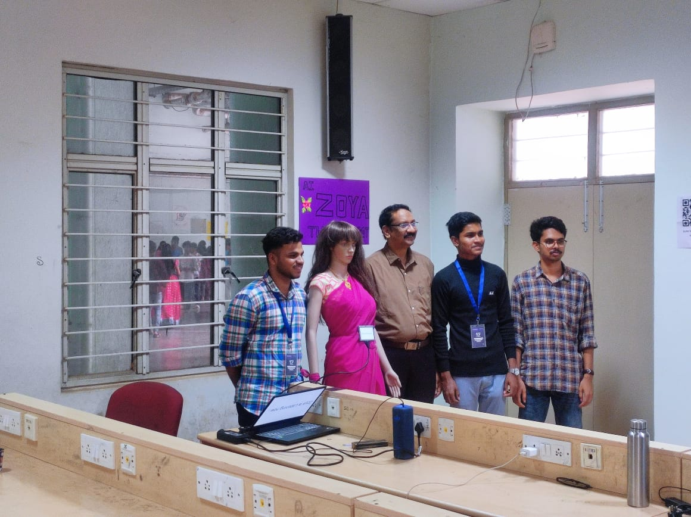
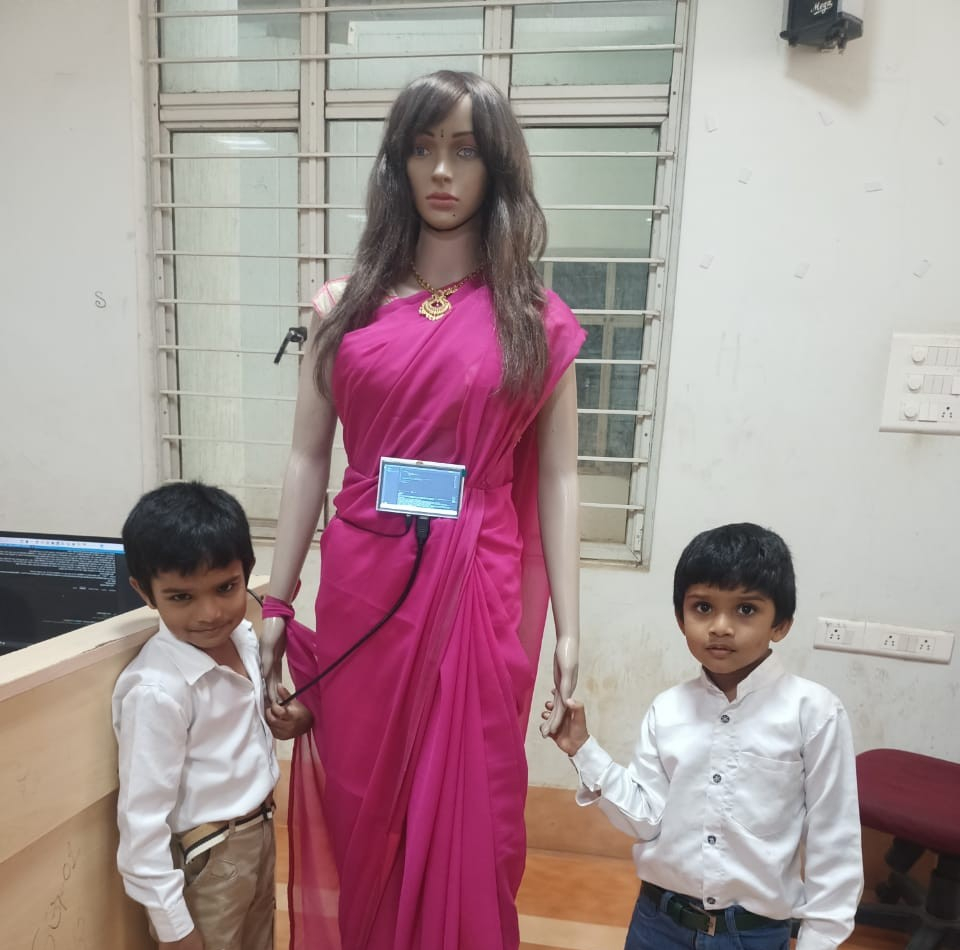
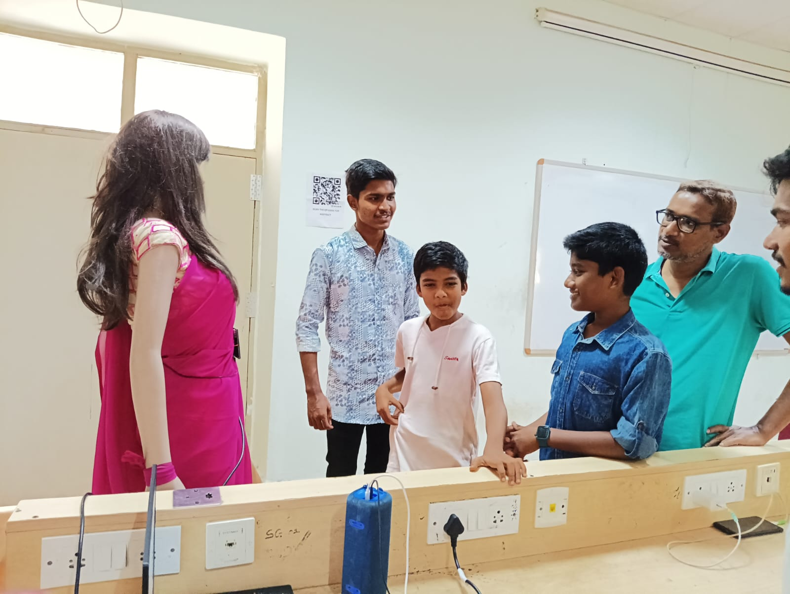
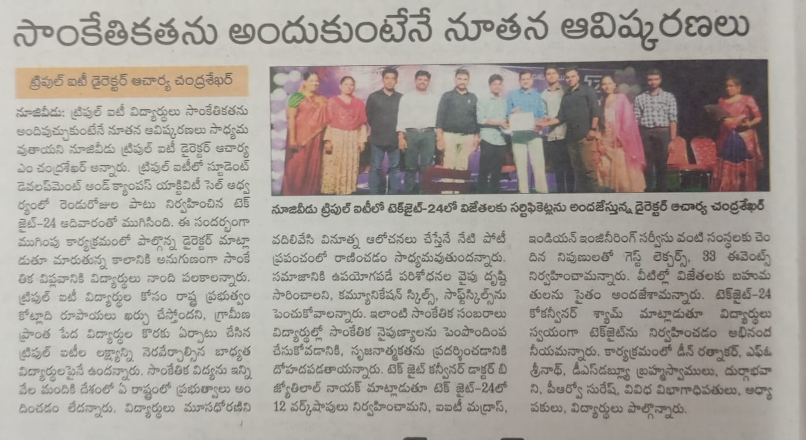
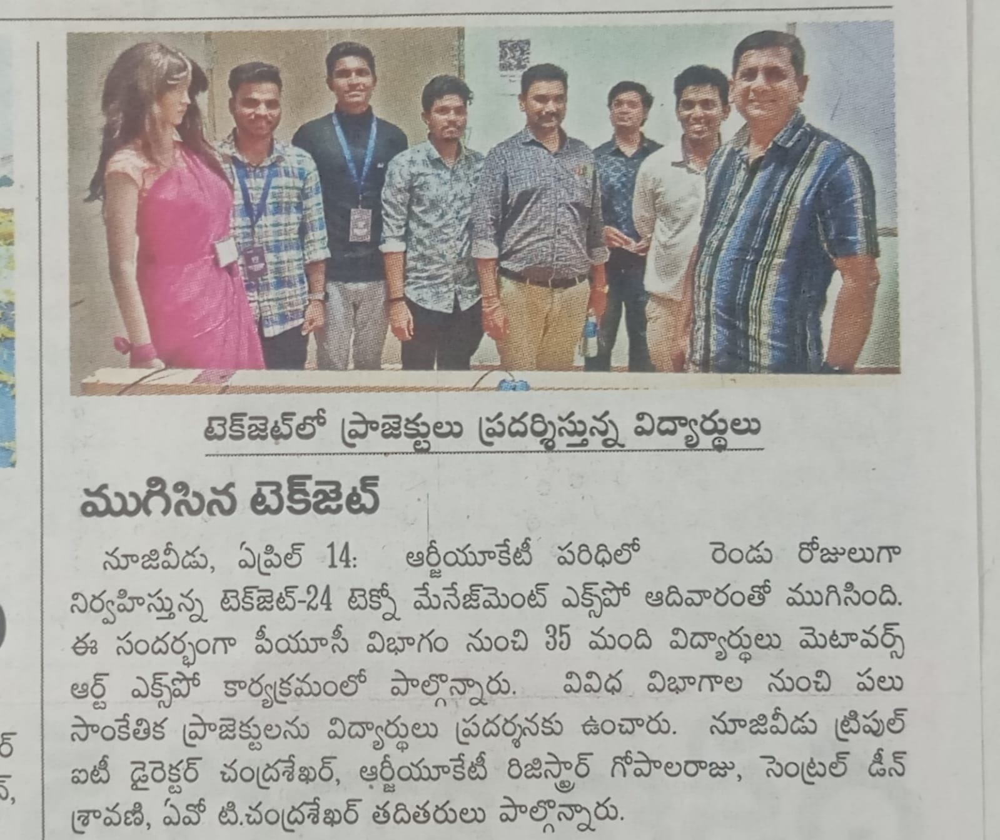
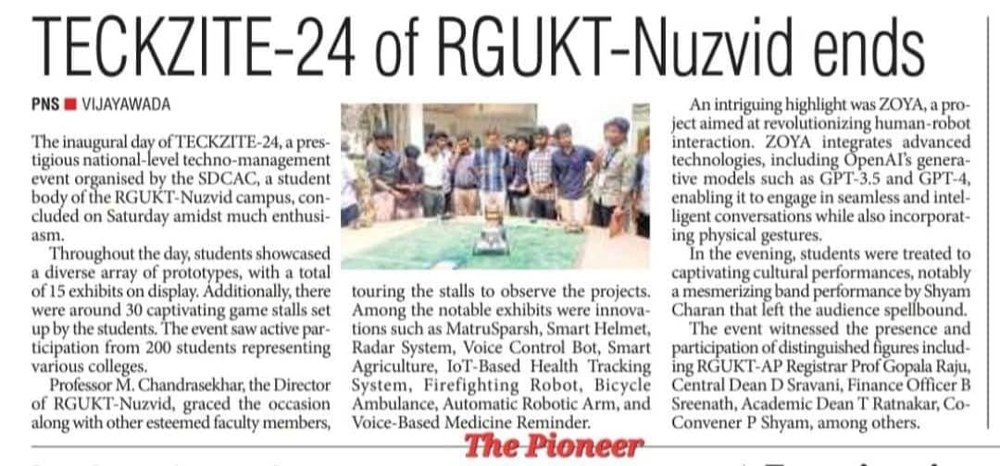

Abstract
ZOYA is a physical AI humanoid counselor deployed at RGUKT Nuzvid to address the unmet demand for student academic and administrative guidance. Built on a Raspberry Pi 4B hardware core, ZOYA uses a Retrieval-Augmented Generation (RAG) pipeline powered by LangChain, FAISS, and OpenAI to deliver accurate, institution-specific responses to student queries — entirely through natural voice-to-voice interaction. Presented at the Intel AI Hackathon 2024 at IIT Kharagpur, ZOYA placed in the Top 3 nationally among hundreds of competing teams and has since received extensive media coverage as a novel application of LLM technology to campus student services.

Introduction
RGUKT (Rajiv Gandhi University of Knowledge Technologies) Nuzvid serves a large student population, the majority of whom are first-generation college students from rural Andhra Pradesh. Orientation to university systems — enrollment procedures, scholarship applications, academic regulations, hostel rules — is overwhelming for many entering students, and the counseling staff-to-student ratio makes one-on-one guidance impractical at scale.
ZOYA was conceived as a persistent, patient, and always-available alternative: a humanoid robot that students could approach for guidance at any time, in natural spoken Telugu or English, and receive accurate institution-specific answers. The key technical challenge was not building a general-purpose chatbot, but grounding the conversational AI in verified institutional knowledge to prevent hallucination — a critical requirement in a guidance context where wrong information can have real consequences.
System Architecture
Hardware
ZOYA's physical form is a custom-fabricated humanoid frame. The computational core is a Raspberry Pi 4B (4GB RAM), chosen for its balance of processing capability, energy efficiency, and community support. Audio input is handled by a directional USB microphone optimized for noisy environments; output via a speaker system integrated into the humanoid chassis.
RAG Pipeline
The intelligence core of ZOYA is a Retrieval-Augmented Generation (RAG) pipeline that grounds all responses in a curated institutional knowledge base:
- Knowledge Ingestion: RGUKT administrative documents, academic regulations, scholarship guidelines, and FAQs are chunked and embedded using OpenAI's text-embedding-ada-002 model into a FAISS vector store.
- Retrieval: Student queries are embedded at query time and the top-k most semantically similar document chunks are retrieved from FAISS.
- Generation: Retrieved context plus conversation history are passed to the LLM (OpenAI GPT) via LangChain's RetrievalQA chain. ConversationBufferMemory maintains multi-turn context across a counseling session.
Voice Interface
ZOYA listens continuously using Python's speech_recognition library, transcribes detected speech to text, passes it through the RAG pipeline, and speaks the response using pyttsx3 text-to-speech. A Tkinter GUI displays the active conversation for the benefit of nearby observers and for accessibility.
Impact & Reception
ZOYA's deployment at RGUKT Nuzvid generated immediate institutional and media interest. The project demonstrates, in operational rather than experimental conditions, that RAG-grounded LLMs can deliver reliable, institution-specific guidance at scale — overcoming the hallucination concern that often limits LLM deployment in high-stakes advisory roles.
Intel AI Hackathon 2024 — Top 3 Nationally
ZOYA was recognized as a Top 3 national finalist at the Intel AI Hackathon 2024, hosted at IIT Kharagpur, competing against hundreds of teams from institutions across India. The recognition validates both the technical novelty of the RAG-humanoid integration and the real-world impact potential of the deployment.
Following the hackathon, ZOYA received media coverage from regional and national outlets, highlighting it as a model for AI deployment in resource-constrained educational institutions.






Conclusion
ZOYA demonstrates that the combination of retrieval-augmented generation and accessible edge hardware (Raspberry Pi) is sufficient to deploy a viable, trustworthy AI counselor in a real institutional setting. The project addresses a genuine access gap in student services, leverages modern LLM capabilities responsibly through knowledge grounding, and demonstrates that impactful AI deployment does not require datacenter-scale infrastructure. Future development will focus on multilingual support (Telugu, Hindi), expanded institutional knowledge bases covering detailed course advising, and integration with the university's existing student information systems.
Resources
References
- Zawacki-Richter, O., et al. (2019). Systematic review of research on artificial intelligence applications in higher education. International Journal of Educational Technology in Higher Education, 16(1), 39.
- Vaswani, A., et al. (2017). Attention Is All You Need. NeurIPS.
- Adadi, A. (2021). A Survey on Data-Efficient Algorithms in Deep Learning. IEEE Access.
- Upton, E., & Halfacree, G. (2016). Raspberry Pi User Guide. Wiley.
- Winkler, R., & Söllner, M. (2018). Unleashing the Potential of Chatbots in Education. AIM Pre-ICIS Workshop.
Contact
Nikhileswara Rao Sulake — nikhil01446@gmail.com · LinkedIn · GitHub